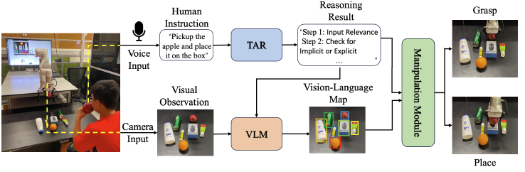

New York University Abu Dhabi
CORA (Chain of Robotic Actions) introduces a novel reasoning framework for robotic manipulation by combining large language models and vision-language models. The system begins with Thought-to-Action Reasoning (TAR) to infer multi-step action chains from high-level user instructions. Then, it grounds these steps using a vision-language model (VLM), enabling a robot to carry out complex manipulation tasks such as grasping, placing, and chaining actions in both simulated and real environments.
CORA leverages Chain of Thought (CoT) prompting, object grounding via Grounding DINO, and planning modules for execution. It handles both explicit and implicit instructions, with robust results across diverse tasks and objects.
